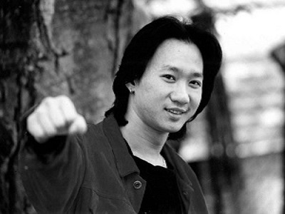
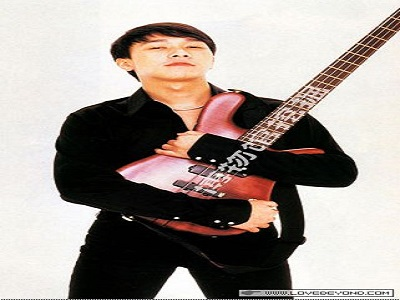
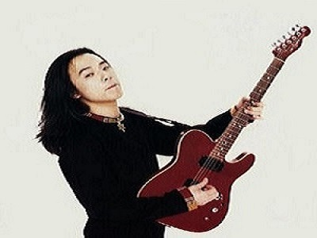
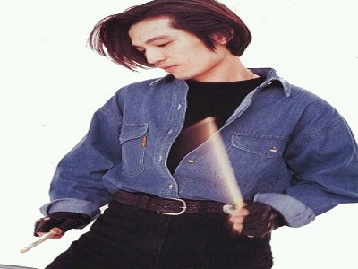

四子时代
黄家驹（1962.6.10~1993.6.30），中国香港男歌手、原创音乐人、吉他手、摇滚乐队Beyond主唱及创队成员。1983年以歌曲《大厦》出道，并担任Beyond乐队的主唱。1993年黄家驹创作的歌曲《海阔天空》获得十大中文金曲奖以及叱咤乐坛流行榜我最喜爱的本地创作歌曲大奖；6月24日，在日本参与某综艺节目期间意外受伤，6月30日，黄家驹逝世， 终年31岁。 同年九月份，被追颁十大中文金曲“无休止符纪念奖”。


黄家强（1964.11.13-----），创作歌手、摇滚乐队Beyond贝斯手，已故歌手黄家驹的弟弟。1983年，黄家强加入Beyond并担任贝斯手，还兼任主唱、作曲、填词及编曲等工作，直至2005年乐队解散。1988年因演唱歌曲《冷雨夜》而受到关注。1994年推出专辑《二楼后座》。2002年，因首张个人专辑《Be Right Back》获得IFPI香港唱片销量大奖“最畅销本地男新人奖”。至今仍是中国乐坛的中流砥柱，好评不断。
黄贯中（1964.3.31-------），黄贯中（Paul Wong），1964年3月31日生于香港，男歌手、香港摇滚乐队Beyond的主音吉他手。1985年加入Beyond。1987年随Beyond发行EP《永远等待》。1990年发行的国语歌曲《大地》由黄贯中演唱，并获得88年度十大劲歌金曲奖。 黄家驹意外去世后，他与Beyond其他成员继续以乐队名义发展。2012年10月，获得12届华语音乐传媒大奖“最佳摇滚艺人”奖。


叶世荣（1963.8.19--------），叶世荣（Yip Sai Wing）,歌手、Beyond乐队鼓手。1983年，与黄家驹等人组成了中国香港摇滚乐队Beyond，并担任乐队的鼓手。2004年，Beyond乐队宣布解散。2001年8月，推出首张个人唱片《美丽的时光机器》。2013年11月，获得音乐先锋榜年度最佳先锋创作歌手、年度先锋摇滚歌手奖项。2015年9月，推出专辑《引以为荣》，专辑中包含曾推出的歌曲《一切会好》、等歌曲。